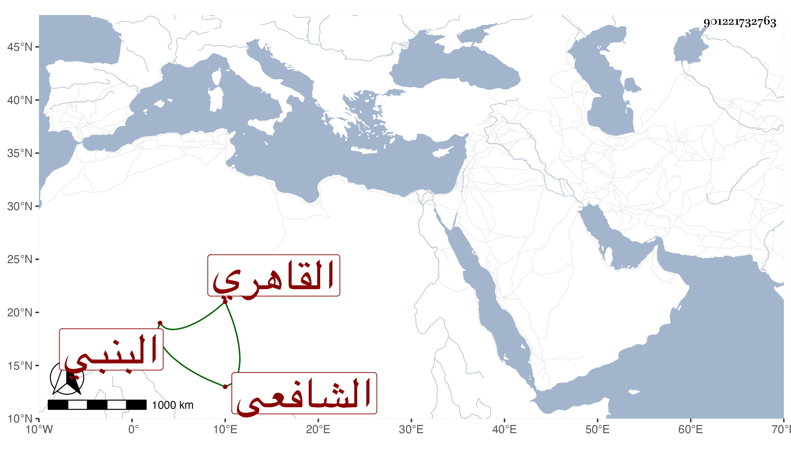

0902Sakhawi.DawLamic.ITO20230111-ara1.EIS1600.901221732763
Biography ID: 901221732763
387
الحسن بن اسماعيل البدر البنبي ثم القاهري الشافعي والد البدر محمد الآتي ، قرأ على السراج البلقيني بعض تصانيفه ووصفه بالفاضل العالم وأنه بحث وأجاد فيما يبديه وأجاز له وأرخ ذلك في صفر سنة أربع وسبعين وسبعمائة وصاهر البدر بن الامانة على أخته ، وكانت وفاته بعد سنة احدى فان مولد ولده فيها ولكنه لم يدركه ادراكا بينا .
